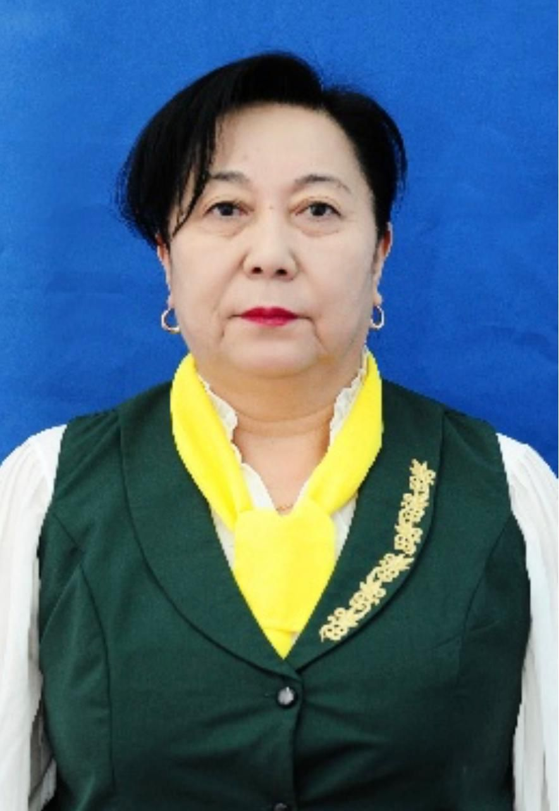

Қорықпа, сен жалғыз емессің
Біз сені түсінеміз және қолдауға дайынбыз. Буллинг пен кибербуллингке қарсы бірге тұрайық.

Біз сені түсінеміз және қолдауға дайынбыз. Буллинг пен кибербуллингке қарсы бірге тұрайық.
Буллингті түсіну — оны тоқтатудың алғашқы қадамы. Төменде маңызды ақпарат пен кеңестер берілген.


Біз сізге қолдау көрсету және көмектесу үшін осындамыз
Тәжірибелі психологтардан кеңес алыңыз және қолдау табыңыз. Біз сізді тыңдаймыз және көмектесеміз.
Ұқсас тәжірибелерден өткен адамдармен байланыс құрыңыз және бір-біріңізді қолданыңыз.
Буллинг пен кибербуллинг туралы білім алып, оларды жеңу жолдарын үйреніңіз.

Qorqpa Project — бұл буллинг пен кибербуллингке қарсы күресетін қоғамдық қозғалыс. Біздің мақсатымыз — әрбір адамның қауіпсіз және қорқынышсыз өмір сүруіне көмектесу.
Біз сенеміз, әрбір бала мен жасөспірімнің құрмет пен түсіністікке лайықты өмір сүруге құқығы бар. Біз бұл құқықты қорғау үшін жұмыс істейміз.
Біздің қызмет пайдаланушыларымыздың пікірлері
Бұл жоба маған көп көмектесті. Менің балама буллингтен зардап шекті, бірақ бізге көмектескендеріңізге рахмет, енді ол қуанады және өзіне сенімді.
Мектепте мені қорлады, бірақ бұл жоба арқылы мен өзімді жалғыз емес екенімді түсіндім. Енді менің артымда бүкіл қоғамдастық тұр.
Мен мұғаліммін және бұл ресурстар менің оқушыларыма көмектесуге көмектесті. Көптеген балалар буллингтен зардап шегеді, бірақ енді мен оларға қалай көмектесуім керектігін білемін.
Біз сізбен біргеміз. Дербес және құпия кеңес алу үшін тегін сенім телефондарына хабарласыңыз:
111 — Балаларға арналған ұлттық сенім телефоны · 150 — Балалар телефоны · 102 — Қауіп төнген жағдайда полиция.

Мен – Серікқалиева Бибі Фатима, Qorqpa project-тің негізін қалаушысымын. Мен Атырау облыстық дарынды балаларға арналған интернаттық мекемесі бар ұлттық гимназияның 10-сынып шәкіртімін.
Бұл жобаны ашу себебім – қазіргі қоғамдағы ең өзекті мәселелердің бірі болып отырған буллинг пен кибербуллингке қарсы күреске өз үлесімді қосу. Балалардың қауіпсіз, құрметке толы ортада өмір сүруі – мен үшін өте маңызды.
Осы жобаның басталуына үлес қосқан жетекшім, сондай-ақ осындай проектіні ашуға бастама салып, қолдау көрсеткен мұғалімім – Жумабаева Айгуль Сиюгалиевна, Атырау облыстық дарынды балаларға арналған интернаттық мекемесі бар ұлттық гимназияның тарих және құқық пәндерінің мұғалімі, педагог-шебер.
Біз бірге буллинг пен кибербуллингке қарсы тұрып, әр бала өз дауысын еркін жеткізе алатын, қорқынышсыз орта қалыптастыруға тырысамыз.